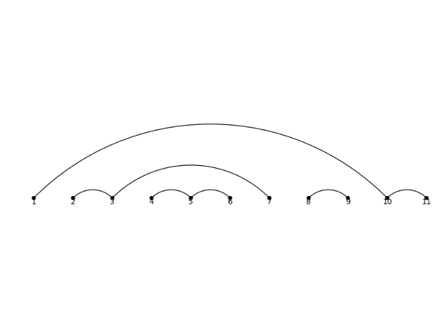

Set Partitions¶
AUTHORS:
- Mike Hansen
- MuPAD-Combinat developers (for algorithms and design inspiration).
- Travis Scrimshaw (2013-02-28): Removed
CombinatorialClassand added entry point throughSetPartition. - Martin Rubey (2017-10-10): Cleanup, add crossings and nestings, add random generation.
This module defines a class for immutable partitioning of a set. For
mutable version see DisjointSet().
-
class
sage.combinat.set_partition.AbstractSetPartition¶ Bases:
sage.structure.list_clone.ClonableArrayMethods of set partitions which are independent of the base set
-
base_set()¶ Return the base set of
self, which is the union of all parts ofself.EXAMPLES:
sage: SetPartition([[1], [2,3], [4]]).base_set() {1, 2, 3, 4} sage: SetPartition([[1,2,3,4]]).base_set() {1, 2, 3, 4} sage: SetPartition([]).base_set() {}
-
base_set_cardinality()¶ Return the cardinality of the base set of
self, which is the sum of the sizes of the parts ofself.This is also known as the size (sometimes the weight) of a set partition.
EXAMPLES:
sage: SetPartition([[1], [2,3], [4]]).base_set_cardinality() 4 sage: SetPartition([[1,2,3,4]]).base_set_cardinality() 4
-
coarsenings()¶ Return a list of coarsenings of
self.See also
refinements()EXAMPLES:
sage: SetPartition([[1,3],[2,4]]).coarsenings() [{{1, 2, 3, 4}}, {{1, 3}, {2, 4}}] sage: SetPartition([[1],[2,4],[3]]).coarsenings() [{{1, 2, 3, 4}}, {{1, 2, 4}, {3}}, {{1, 3}, {2, 4}}, {{1}, {2, 3, 4}}, {{1}, {2, 4}, {3}}] sage: SetPartition([]).coarsenings() [{}]
-
inf(other)¶ The product of the set partitions
selfandother.The product of two set partitions \(B\) and \(C\) is defined as the set partition whose parts are the nonempty intersections between each part of \(B\) and each part of \(C\). This product is also the infimum of \(B\) and \(C\) in the classical set partition lattice (that is, the coarsest set partition which is finer than each of \(B\) and \(C\)). Consequently,
infacts as an alias for this method.See also
EXAMPLES:
sage: x = SetPartition([ [1,2], [3,5,4] ]) sage: y = SetPartition(( (3,1,2), (5,4) )) sage: x * y {{1, 2}, {3}, {4, 5}} sage: S = SetPartitions(4) sage: sp1 = S([[2,3,4], [1]]) sage: sp2 = S([[1,3], [2,4]]) sage: s = S([[2,4], [3], [1]]) sage: sp1.inf(sp2) == s True
-
max_block_size()¶ The maximum block size of the diagram.
EXAMPLES:
sage: from sage.combinat.diagram_algebras import PartitionDiagram, PartitionDiagrams sage: pd = PartitionDiagram([[1,-3,-5],[2,4],[3,-1,-2],[5],[-4]]) sage: pd.max_block_size() 3 sage: sorted(d.max_block_size() for d in PartitionDiagrams(2)) [1, 2, 2, 2, 2, 2, 2, 2, 2, 2, 3, 3, 3, 3, 4] sage: sorted(sp.max_block_size() for sp in SetPartitions(3)) [1, 2, 2, 2, 3]
-
standard_form()¶ Return
selfas a list of lists.When the ground set is totally ordered, the elements of each block are listed in increasing order.
This is not related to standard set partitions (which simply means set partitions of \([n] = \{ 1, 2, \ldots , n \}\) for some integer \(n\)) or standardization (
standardization()).EXAMPLES:
sage: [x.standard_form() for x in SetPartitions(4, [2,2])] [[[1, 2], [3, 4]], [[1, 3], [2, 4]], [[1, 4], [2, 3]]]
-
sup(t)¶ Return the supremum of
selfandtin the classical set partition lattice.The supremum of two set partitions \(B\) and \(C\) is obtained as the transitive closure of the relation which relates \(i\) to \(j\) if and only if \(i\) and \(j\) are in the same part in at least one of the set partitions \(B\) and \(C\).
See also
__mul__()EXAMPLES:
sage: S = SetPartitions(4) sage: sp1 = S([[2,3,4], [1]]) sage: sp2 = S([[1,3], [2,4]]) sage: s = S([[1,2,3,4]]) sage: sp1.sup(sp2) == s True
-
-
class
sage.combinat.set_partition.SetPartition(parent, s, check=True)¶ Bases:
sage.combinat.set_partition.AbstractSetPartitionA partition of a set.
A set partition \(p\) of a set \(S\) is a partition of \(S\) into subsets called parts and represented as a set of sets. By extension, a set partition of a nonnegative integer \(n\) is the set partition of the integers from 1 to \(n\). The number of set partitions of \(n\) is called the \(n\)-th Bell number.
There is a natural integer partition associated with a set partition, namely the nonincreasing sequence of sizes of all its parts.
There is a classical lattice associated with all set partitions of \(n\). The infimum of two set partitions is the set partition obtained by intersecting all the parts of both set partitions. The supremum is obtained by transitive closure of the relation \(i\) related to \(j\) if and only if they are in the same part in at least one of the set partitions.
We will use terminology from partitions, in particular the length of a set partition \(A = \{A_1, \ldots, A_k\}\) is the number of parts of \(A\) and is denoted by \(|A| := k\). The size of \(A\) is the cardinality of \(S\). We will also sometimes use the notation \([n] := \{1, 2, \ldots, n\}\).
EXAMPLES:
There are 5 set partitions of the set \(\{1,2,3\}\):
sage: SetPartitions(3).cardinality() 5
Here is the list of them:
sage: SetPartitions(3).list() [{{1, 2, 3}}, {{1, 2}, {3}}, {{1, 3}, {2}}, {{1}, {2, 3}}, {{1}, {2}, {3}}]
There are 6 set partitions of \(\{1,2,3,4\}\) whose underlying partition is \([2, 1, 1]\):
sage: SetPartitions(4, [2,1,1]).list() [{{1}, {2}, {3, 4}}, {{1}, {2, 4}, {3}}, {{1}, {2, 3}, {4}}, {{1, 4}, {2}, {3}}, {{1, 3}, {2}, {4}}, {{1, 2}, {3}, {4}}]
Since trac ticket #14140, we can create a set partition directly by
SetPartition, which creates the base set by taking the union of the parts passed in:sage: s = SetPartition([[1,3],[2,4]]); s {{1, 3}, {2, 4}} sage: s.parent() Set partitions
-
apply_permutation(p)¶ Apply
pto the underlying set ofself.INPUT:
p– a permutation
EXAMPLES:
sage: x = SetPartition([[1,2], [3,5,4]]) sage: p = Permutation([2,1,4,5,3]) sage: x.apply_permutation(p) {{1, 2}, {3, 4, 5}} sage: q = Permutation([3,2,1,5,4]) sage: x.apply_permutation(q) {{1, 4, 5}, {2, 3}} sage: m = PerfectMatching([(1,4),(2,6),(3,5)]) sage: m.apply_permutation(Permutation([4,1,5,6,3,2])) [(1, 2), (3, 5), (4, 6)]
-
arcs()¶ Return
selfas a list of arcs.Assuming that the blocks are sorted, the arcs are the pairs of consecutive elements in the blocks.
EXAMPLES:
sage: A = SetPartition([[1],[2,3],[4]]) sage: A.arcs() [(2, 3)] sage: B = SetPartition([[1,3,6,7],[2,5],[4]]) sage: B.arcs() [(1, 3), (3, 6), (6, 7), (2, 5)]
-
cardinality()¶ Returns the len of
selfEXAMPLES:
sage: from sage.structure.list_clone_demo import IncreasingArrays sage: len(IncreasingArrays()([1,2,3])) 3
-
check()¶ Check that we are a valid set partition.
EXAMPLES:
sage: S = SetPartitions(4) sage: s = S([[1, 3], [2, 4]]) sage: s.check()
-
crossings()¶ Return the crossing arcs of a set partition on a totally ordered set.
OUTPUT:
We place the elements of the ground set in order on a line and draw the set partition by linking consecutive elements of each block in the upper half-plane. This function returns a list of the pairs of crossing lines (as a line correspond to a pair, it returns a list of pairs of pairs).
EXAMPLES:
sage: p = SetPartition([[1,4],[2,5,7],[3,6]]) sage: p.crossings() [((1, 4), (2, 5)), ((1, 4), (3, 6)), ((2, 5), (3, 6)), ((3, 6), (5, 7))]
-
crossings_iterator()¶ Return the crossing arcs of a set partition on a totally ordered set.
OUTPUT:
We place the elements of the ground set in order on a line and draw the set partition by linking consecutive elements of each block in the upper half-plane. This function returns an iterator over the pairs of crossing lines (as a line correspond to a pair, the iterator produces pairs of pairs).
EXAMPLES:
sage: p = SetPartition([[1,4],[2,5,7],[3,6]]) sage: next(p.crossings_iterator()) ((1, 4), (2, 5))
-
is_atomic()¶ Return if
selfis an atomic set partition.A (standard) set partition \(A\) can be split if there exist \(j < i\) such that \(\max(A_j) < \min(A_i)\) where \(A\) is ordered by minimal elements. This means we can write \(A = B | C\) for some nonempty set partitions \(B\) and \(C\). We call a set partition atomic if it cannot be split and is nonempty. Here, the pipe symbol \(|\) is as defined in method
pipe().EXAMPLES:
sage: SetPartition([[1,3], [2]]).is_atomic() True sage: SetPartition([[1,3], [2], [4]]).is_atomic() False sage: SetPartition([[1], [2,4], [3]]).is_atomic() False sage: SetPartition([[1,2,3,4]]).is_atomic() True sage: SetPartition([[1, 4], [2], [3]]).is_atomic() True sage: SetPartition([]).is_atomic() False
-
is_noncrossing()¶ Check if
selfis noncrossing.OUTPUT:
We place the elements of the ground set in order on a line and draw the set partition by linking consecutive elements of each block in the upper half-plane. This function returns
Trueif the picture obtained this way has no crossings.EXAMPLES:
sage: p = SetPartition([[1,4],[2,5,7],[3,6]]) sage: p.is_noncrossing() False sage: n = PerfectMatching([3,8,1,7,6,5,4,2]); n [(1, 3), (2, 8), (4, 7), (5, 6)] sage: n.is_noncrossing() False sage: PerfectMatching([(1, 4), (2, 3), (5, 6)]).is_noncrossing() True
-
is_nonnesting()¶ Return if
selfis nonnesting or not.OUTPUT:
We place the elements of the ground set in order on a line and draw the set partition by linking consecutive elements of each block in the upper half-plane. This function returns
Trueif the picture obtained this way has no nestings.EXAMPLES:
sage: n = PerfectMatching([3,8,1,7,6,5,4,2]); n [(1, 3), (2, 8), (4, 7), (5, 6)] sage: n.is_nonnesting() False sage: PerfectMatching([(1, 3), (2, 5), (4, 6)]).is_nonnesting() True
-
latex_options()¶ Return the latex options for use in the
_latex_function as a dictionary. The default values are set using the global options.Options can be found in
set_latex_options()EXAMPLES:
sage: SP = SetPartition([[1,6], [3,5,4]]); SP.latex_options() {'angle': 0, 'color': 'black', 'fill': False, 'plot': None, 'radius': '1cm', 'show_labels': True, 'tikz_scale': 1}
-
nestings()¶ Return the nestings of
self.OUTPUT:
We place the elements of the ground set in order on a line and draw the set partition by linking consecutive elements of each block in the upper half-plane. This function returns the list of the pairs of nesting lines (as a line correspond to a pair, it returns a list of pairs of pairs).
EXAMPLES:
sage: m = PerfectMatching([(1, 6), (2, 7), (3, 5), (4, 8)]) sage: m.nestings() [((1, 6), (3, 5)), ((2, 7), (3, 5))] sage: n = PerfectMatching([3,8,1,7,6,5,4,2]); n [(1, 3), (2, 8), (4, 7), (5, 6)] sage: n.nestings() [((2, 8), (4, 7)), ((2, 8), (5, 6)), ((4, 7), (5, 6))]
-
nestings_iterator()¶ Iterate over the nestings of
self.OUTPUT:
We place the elements of the ground set in order on a line and draw the set partition by linking consecutive elements of each block in the upper half-plane. This function returns an iterator over the pairs of nesting lines (as a line correspond to a pair, the iterator produces pairs of pairs).
EXAMPLES:
sage: n = PerfectMatching([(1, 6), (2, 7), (3, 5), (4, 8)]) sage: it = n.nestings_iterator() sage: next(it) ((1, 6), (3, 5)) sage: next(it) ((2, 7), (3, 5)) sage: next(it) Traceback (most recent call last): ... StopIteration
-
number_of_crossings()¶ Return the number of crossings.
OUTPUT:
We place the elements of the ground set in order on a line and draw the set partition by linking consecutive elements of each block in the upper half-plane. This function returns the number the pairs of crossing lines.
EXAMPLES:
sage: p = SetPartition([[1,4],[2,5,7],[3,6]]) sage: p.number_of_crossings() 4 sage: n = PerfectMatching([3,8,1,7,6,5,4,2]); n [(1, 3), (2, 8), (4, 7), (5, 6)] sage: n.number_of_crossings() 1
-
number_of_nestings()¶ Return the number of nestings of
self.OUTPUT:
We place the elements of the ground set in order on a line and draw the set partition by linking consecutive elements of each block in the upper half-plane. This function returns the number the pairs of nesting lines.
EXAMPLES:
sage: n = PerfectMatching([3,8,1,7,6,5,4,2]); n [(1, 3), (2, 8), (4, 7), (5, 6)] sage: n.number_of_nestings() 3
-
ordered_set_partition_action(s)¶ Return the action of an ordered set partition
sonself.Let \(A = \{A_1, A_2, \ldots, A_k\}\) be a set partition of some set \(S\) and \(s\) be an ordered set partition (i.e., set composition) of a subset of \([k]\). Let \(A^{\downarrow}\) denote the standardization of \(A\), and \(A_{\{ i_1, i_2, \ldots, i_m \}}\) denote the sub-partition \(\{A_{i_1}, A_{i_2}, \ldots, A_{i_m}\}\) for any subset \(\{i_1, \ldots, i_m\}\) of \(\{1, \ldots, k\}\). We define the set partition \(s(A)\) by
\[s(A) = A_{s_1}^{\downarrow} | A_{s_2}^{\downarrow} | \cdots | A_{s_q}^{\downarrow}.\]where \(s = (s_1, s_2, \ldots, s_q)\). Here, the pipe symbol \(|\) is as defined in method
pipe().This is \(s[A]\) in section 2.3 in [LM2011].
INPUT:
s– an ordered set partition with base set a subset of \(\{1, \ldots, k\}\)
EXAMPLES:
sage: A = SetPartition([[1], [2,4], [3]]) sage: s = OrderedSetPartition([[1,3], [2]]) sage: A.ordered_set_partition_action(s) {{1}, {2}, {3, 4}} sage: s = OrderedSetPartition([[2,3], [1]]) sage: A.ordered_set_partition_action(s) {{1, 3}, {2}, {4}}
We create Figure 1 in [LM2011] (we note that there is a typo in the lower-left corner of the table in the published version of the paper, whereas the arXiv version gives the correct partition):
sage: A = SetPartition([[1,3], [2,9], [4,5,8], [7]]) sage: B = SetPartition([[1,3], [2,8], [4,5,6], [7]]) sage: C = SetPartition([[1,5], [2,8], [3,4,6], [7]]) sage: s = OrderedSetPartition([[1,3], [2]]) sage: t = OrderedSetPartition([[2], [3,4]]) sage: u = OrderedSetPartition([[1], [2,3,4]]) sage: A.ordered_set_partition_action(s) {{1, 2}, {3, 4, 5}, {6, 7}} sage: A.ordered_set_partition_action(t) {{1, 2}, {3, 4, 6}, {5}} sage: A.ordered_set_partition_action(u) {{1, 2}, {3, 8}, {4, 5, 7}, {6}} sage: B.ordered_set_partition_action(s) {{1, 2}, {3, 4, 5}, {6, 7}} sage: B.ordered_set_partition_action(t) {{1, 2}, {3, 4, 5}, {6}} sage: B.ordered_set_partition_action(u) {{1, 2}, {3, 8}, {4, 5, 6}, {7}} sage: C.ordered_set_partition_action(s) {{1, 4}, {2, 3, 5}, {6, 7}} sage: C.ordered_set_partition_action(t) {{1, 2}, {3, 4, 5}, {6}} sage: C.ordered_set_partition_action(u) {{1, 2}, {3, 8}, {4, 5, 6}, {7}}
REFERENCES:
-
pipe(other)¶ Return the pipe of the set partitions
selfandother.The pipe of two set partitions is defined as follows:
For any integer \(k\) and any subset \(I\) of \(\ZZ\), let \(I + k\) denote the subset of \(\ZZ\) obtained by adding \(k\) to every element of \(k\).
If \(B\) and \(C\) are set partitions of \([n]\) and \([m]\), respectively, then the pipe of \(B\) and \(C\) is defined as the set partition
\[\{ B_1, B_2, \ldots, B_b, C_1 + n, C_2 + n, \ldots, C_c + n \}\]of \([n+m]\), where \(B = \{ B_1, B_2, \ldots, B_b \}\) and \(C = \{ C_1, C_2, \ldots, C_c \}\). This pipe is denoted by \(B | C\).
EXAMPLES:
sage: SetPartition([[1,3],[2,4]]).pipe(SetPartition([[1,3],[2]])) {{1, 3}, {2, 4}, {5, 7}, {6}} sage: SetPartition([]).pipe(SetPartition([[1,2],[3,5],[4]])) {{1, 2}, {3, 5}, {4}} sage: SetPartition([[1,2],[3,5],[4]]).pipe(SetPartition([])) {{1, 2}, {3, 5}, {4}} sage: SetPartition([[1,2],[3]]).pipe(SetPartition([[1]])) {{1, 2}, {3}, {4}}
-
plot(angle=None, color='black', base_set_dict=None)¶ Return a plot of
self.INPUT:
angle– (default: \(\pi/4\)) the angle at which the arcs take off (if angle is negative, the arcs are drawn below the horizontal line)color– (default:'black') color of the arcsbase_set_dict– (optional) dictionary with keys elements ofbase_set()and values as integer or float
EXAMPLES:
sage: p = SetPartition([[1,10,11],[2,3,7],[4,5,6],[8,9]]) sage: p.plot() Graphics object consisting of 29 graphics primitives
sage: p = SetPartition([[1,3,4],[2,5]]) sage: print(p.plot().description()) Point set defined by 1 point(s): [(0.0, 0.0)] Point set defined by 1 point(s): [(1.0, 0.0)] Point set defined by 1 point(s): [(2.0, 0.0)] Point set defined by 1 point(s): [(3.0, 0.0)] Point set defined by 1 point(s): [(4.0, 0.0)] Text '1' at the point (0.0,-0.1) Text '2' at the point (1.0,-0.1) Text '3' at the point (2.0,-0.1) Text '4' at the point (3.0,-0.1) Text '5' at the point (4.0,-0.1) Arc with center (1.0,-1.0) radii (1.41421356237,1.41421356237) angle 0.0 inside the sector (0.785398163397,2.35619449019) Arc with center (2.5,-0.5) radii (0.707106781187,0.707106781187) angle 0.0 inside the sector (0.785398163397,2.35619449019) Arc with center (2.5,-1.5) radii (2.12132034356,2.12132034356) angle 0.0 inside the sector (0.785398163397,2.35619449019) sage: p = SetPartition([['a','c'],['b','d'],['e']]) sage: print(p.plot().description()) Point set defined by 1 point(s): [(0.0, 0.0)] Point set defined by 1 point(s): [(1.0, 0.0)] Point set defined by 1 point(s): [(2.0, 0.0)] Point set defined by 1 point(s): [(3.0, 0.0)] Point set defined by 1 point(s): [(4.0, 0.0)] Text 'a' at the point (0.0,-0.1) Text 'b' at the point (1.0,-0.1) Text 'c' at the point (2.0,-0.1) Text 'd' at the point (3.0,-0.1) Text 'e' at the point (4.0,-0.1) Arc with center (1.0,-1.0) radii (1.41421356237,1.41421356237) angle 0.0 inside the sector (0.785398163397,2.35619449019) Arc with center (2.0,-1.0) radii (1.41421356237,1.41421356237) angle 0.0 inside the sector (0.785398163397,2.35619449019) sage: p = SetPartition([['a','c'],['b','d'],['e']]) sage: print(p.plot(base_set_dict={'a':0,'b':1,'c':2,'d':-2.3,'e':5.4}).description()) Point set defined by 1 point(s): [(-2.3, 0.0)] Point set defined by 1 point(s): [(0.0, 0.0)] Point set defined by 1 point(s): [(1.0, 0.0)] Point set defined by 1 point(s): [(2.0, 0.0)] Point set defined by 1 point(s): [(5.4, 0.0)] Text 'a' at the point (0.0,-0.1) Text 'b' at the point (1.0,-0.1) Text 'c' at the point (2.0,-0.1) Text 'd' at the point (-2.3,-0.1) Text 'e' at the point (5.4,-0.1) Arc with center (-0.65,-1.65) radii (2.33345237792,2.33345237792) angle 0.0 inside the sector (0.785398163397,2.35619449019) Arc with center (1.0,-1.0) radii (1.41421356237,1.41421356237) angle 0.0 inside the sector (0.785398163397,2.35619449019)
-
refinements()¶ Return a list of refinements of
self.See also
coarsenings()EXAMPLES:
sage: SetPartition([[1,3],[2,4]]).refinements() [{{1, 3}, {2, 4}}, {{1, 3}, {2}, {4}}, {{1}, {2, 4}, {3}}, {{1}, {2}, {3}, {4}}] sage: SetPartition([[1],[2,4],[3]]).refinements() [{{1}, {2, 4}, {3}}, {{1}, {2}, {3}, {4}}] sage: SetPartition([]).refinements() [{}]
-
restriction(I)¶ Return the restriction of
selfto a subsetI(which is given as a set or list or any other iterable).EXAMPLES:
sage: A = SetPartition([[1], [2,3]]) sage: A.restriction([1,2]) {{1}, {2}} sage: A.restriction([2,3]) {{2, 3}} sage: A.restriction([]) {} sage: A.restriction([4]) {}
-
set_latex_options(**kwargs)¶ Set the latex options for use in the
_latex_functiontikz_scale– (default: 1) scale for use with tikz packageplot– (default:None)Nonereturns the set notation,linearreturns a linear plot,cyclicreturns a cyclic plotcolor– (default:'black') the arc colorsfill– (default:False) ifTruethen fillscolor, else you can pass in a color to alter the fill color - only works with cyclic plotshow_labels– (default:True) ifTrueshows labels - only works with plotsradius– (default:"1cm") radius of circle for cyclic plot - only works with cyclic plotangle– (default: 0) angle for linear plot
EXAMPLES:
sage: SP = SetPartition([[1,6], [3,5,4]]) sage: SP.set_latex_options(tikz_scale=2,plot='linear',fill=True,color='blue',angle=45) sage: SP.set_latex_options(plot='cyclic') sage: SP.latex_options() {'angle': 45, 'color': 'blue', 'fill': True, 'plot': 'cyclic', 'radius': '1cm', 'show_labels': True, 'tikz_scale': 2}
-
shape()¶ Return the integer partition whose parts are the sizes of the sets in
self.EXAMPLES:
sage: S = SetPartitions(5) sage: x = S([[1,2], [3,5,4]]) sage: x.shape() [3, 2] sage: y = S([[2], [3,1], [5,4]]) sage: y.shape() [2, 2, 1]
-
shape_partition()¶ Return the integer partition whose parts are the sizes of the sets in
self.EXAMPLES:
sage: S = SetPartitions(5) sage: x = S([[1,2], [3,5,4]]) sage: x.shape() [3, 2] sage: y = S([[2], [3,1], [5,4]]) sage: y.shape() [2, 2, 1]
-
size()¶ Return the cardinality of the base set of
self, which is the sum of the sizes of the parts ofself.This is also known as the size (sometimes the weight) of a set partition.
EXAMPLES:
sage: SetPartition([[1], [2,3], [4]]).base_set_cardinality() 4 sage: SetPartition([[1,2,3,4]]).base_set_cardinality() 4
-
standardization()¶ Return the standardization of
self.Given a set partition \(A = \{A_1, \ldots, A_n\}\) of an ordered set \(S\), the standardization of \(A\) is the set partition of \(\{1, 2, \ldots, |S|\}\) obtained by replacing the elements of the parts of \(A\) by the integers \(1, 2, \ldots, |S|\) in such a way that their relative order is preserved (i. e., the smallest element in the whole set partition is replaced by \(1\), the next-smallest by \(2\), and so on).
EXAMPLES:
sage: SetPartition([[4], [1, 3]]).standardization() {{1, 2}, {3}} sage: SetPartition([[4], [6, 3]]).standardization() {{1, 3}, {2}} sage: SetPartition([]).standardization() {} sage: SetPartition([('c','b'),('d','f'),('e','a')]).standardization() {{1, 5}, {2, 3}, {4, 6}}
-
strict_coarsenings()¶ Return all strict coarsenings of
self.Strict coarsening is the binary relation on set partitions defined as the transitive-and-reflexive closure of the relation \(\prec\) defined as follows: For two set partitions \(A\) and \(B\), we have \(A \prec B\) if there exist parts \(A_i, A_j\) of \(A\) such that \(\max(A_i) < \min(A_j)\) and \(B = A \setminus \{A_i, A_j\} \cup \{ A_i \cup A_j \}\).
EXAMPLES:
sage: A = SetPartition([[1],[2,3],[4]]) sage: A.strict_coarsenings() [{{1}, {2, 3}, {4}}, {{1, 2, 3}, {4}}, {{1, 4}, {2, 3}}, {{1}, {2, 3, 4}}, {{1, 2, 3, 4}}] sage: SetPartition([[1],[2,4],[3]]).strict_coarsenings() [{{1}, {2, 4}, {3}}, {{1, 2, 4}, {3}}, {{1, 3}, {2, 4}}] sage: SetPartition([]).strict_coarsenings() [{}]
-
to_partition()¶ Return the integer partition whose parts are the sizes of the sets in
self.EXAMPLES:
sage: S = SetPartitions(5) sage: x = S([[1,2], [3,5,4]]) sage: x.shape() [3, 2] sage: y = S([[2], [3,1], [5,4]]) sage: y.shape() [2, 2, 1]
-
to_permutation()¶ Convert a set partition of \(\{1,...,n\}\) to a permutation by considering the blocks of the partition as cycles.
The cycles are such that the number of excedences is maximised, that is, each cycle is of the form \((a_1,a_2, ...,a_k)\) with \(a_1<a_2<...<a_k\).
EXAMPLES:
sage: s = SetPartition([[1,3],[2,4]]) sage: s.to_permutation() [3, 4, 1, 2]
-
-
class
sage.combinat.set_partition.SetPartitions¶ Bases:
sage.structure.unique_representation.UniqueRepresentation,sage.structure.parent.ParentAn (unordered) partition of a set \(S\) is a set of pairwise disjoint nonempty subsets with union \(S\), and is represented by a sorted list of such subsets.
SetPartitions(s)returns the class of all set partitions of the sets, which can be given as a set or a string; if a string, each character is considered an element.SetPartitions(n), wherenis an integer, returns the class of all set partitions of the set \(\{1, 2, \ldots, n\}\).You may specify a second argument \(k\). If \(k\) is an integer,
SetPartitionsreturns the class of set partitions into \(k\) parts; if it is an integer partition,SetPartitionsreturns the class of set partitions whose block sizes correspond to that integer partition.The Bell number \(B_n\), named in honor of Eric Temple Bell, is the number of different partitions of a set with \(n\) elements.
EXAMPLES:
sage: S = [1,2,3,4] sage: SetPartitions(S,2) Set partitions of {1, 2, 3, 4} with 2 parts sage: SetPartitions([1,2,3,4], [3,1]).list() [{{1}, {2, 3, 4}}, {{1, 3, 4}, {2}}, {{1, 2, 4}, {3}}, {{1, 2, 3}, {4}}] sage: SetPartitions(7, [3,3,1]).cardinality() 70
In strings, repeated letters are not considered distinct as of trac ticket #14140:
sage: SetPartitions('abcde').cardinality() 52 sage: SetPartitions('aabcd').cardinality() 15
REFERENCES:
-
Element¶ alias of
SetPartition
-
is_less_than(s, t)¶ Check if \(s < t\) in the refinement ordering on set partitions.
This means that \(s\) is a refinement of \(t\) and satisfies \(s \neq t\).
A set partition \(s\) is said to be a refinement of a set partition \(t\) of the same set if and only if each part of \(s\) is a subset of a part of \(t\).
EXAMPLES:
sage: S = SetPartitions(4) sage: s = S([[1,3],[2,4]]) sage: t = S([[1],[2],[3],[4]]) sage: S.is_less_than(t, s) True sage: S.is_less_than(s, t) False sage: S.is_less_than(s, s) False
-
is_strict_refinement(s, t)¶ Return
Trueifsis a strict refinement oftand satisfies \(s \neq t\).A set partition \(s\) is said to be a strict refinement of a set partition \(t\) of the same set if and only if one can obtain \(t\) from \(s\) by repeatedly combining pairs of parts whose convex hulls don’t intersect (i. e., whenever we are combining two parts, the maximum of each of them should be smaller than the minimum of the other).
EXAMPLES:
sage: S = SetPartitions(4) sage: s = S([[1],[2],[3],[4]]) sage: t = S([[1,3],[2,4]]) sage: u = S([[1,2,3,4]]) sage: S.is_strict_refinement(s, t) True sage: S.is_strict_refinement(t, u) False sage: A = SetPartition([[1,3],[2,4]]) sage: B = SetPartition([[1,2,3,4]]) sage: S.is_strict_refinement(s, A) True sage: S.is_strict_refinement(t, B) False
-
lt(s, t)¶ Check if \(s < t\) in the refinement ordering on set partitions.
This means that \(s\) is a refinement of \(t\) and satisfies \(s \neq t\).
A set partition \(s\) is said to be a refinement of a set partition \(t\) of the same set if and only if each part of \(s\) is a subset of a part of \(t\).
EXAMPLES:
sage: S = SetPartitions(4) sage: s = S([[1,3],[2,4]]) sage: t = S([[1],[2],[3],[4]]) sage: S.is_less_than(t, s) True sage: S.is_less_than(s, t) False sage: S.is_less_than(s, s) False
-
-
class
sage.combinat.set_partition.SetPartitions_all¶ Bases:
sage.combinat.set_partition.SetPartitionsAll set partitions.
-
class
sage.combinat.set_partition.SetPartitions_set(s)¶ Bases:
sage.combinat.set_partition.SetPartitionsSet partitions of a fixed set \(S\).
-
base_set()¶ Return the base set of
self.EXAMPLES:
sage: SetPartitions(3).base_set() {1, 2, 3}
-
base_set_cardinality()¶ Return the cardinality of the base set of
self.EXAMPLES:
sage: SetPartitions(3).base_set_cardinality() 3
-
cardinality()¶ Return the number of set partitions of the set \(S\).
The cardinality is given by the \(n\)-th Bell number where \(n\) is the number of elements in the set \(S\).
EXAMPLES:
sage: SetPartitions([1,2,3,4]).cardinality() 15 sage: SetPartitions(3).cardinality() 5 sage: SetPartitions(3,2).cardinality() 3 sage: SetPartitions([]).cardinality() 1
-
random_element()¶ Return a random set partition.
This is a very naive implementation of Knuths outline in F3B, 7.2.1.5.
EXAMPLES:
sage: S = SetPartitions(10) sage: S.random_element() {{1, 4, 9}, {2, 5, 7}, {3}, {6}, {8, 10}}
-
-
class
sage.combinat.set_partition.SetPartitions_setn(s, k)¶ Bases:
sage.combinat.set_partition.SetPartitions_setSet partitions with a given number of blocks.
-
cardinality()¶ The Stirling number of the second kind is the number of partitions of a set of size \(n\) into \(k\) blocks.
EXAMPLES:
sage: SetPartitions(5, 3).cardinality() 25 sage: stirling_number2(5,3) 25
-
n¶ self.nis deprecated; usenumber_of_blocks()instead.
-
number_of_blocks()¶ Return the number of blocks of the set partitions in
self.EXAMPLES:
sage: SetPartitions(5, 3).number_of_blocks() 3
-
random_element()¶ Return a random set partition of
self.See https://mathoverflow.net/questions/141999.
EXAMPLES:
sage: S = SetPartitions(10, 4) sage: S.random_element() {{1, 2, 4, 6, 9, 10}, {3}, {5, 7}, {8}}
-
-
class
sage.combinat.set_partition.SetPartitions_setparts(s, parts)¶ Bases:
sage.combinat.set_partition.SetPartitions_setSet partitions with fixed partition sizes corresponding to an integer partition \(\lambda\).
-
cardinality()¶ Return the cardinality of
self.This algorithm counts for each block of the partition the number of ways to fill it using values from the set. Then, for each distinct value \(v\) of block size, we divide the result by the number of ways to arrange the blocks of size \(v\) in the set partition.
For example, if we want to count the number of set partitions of size 13 having [3,3,3,2,2] as underlying partition we compute the number of ways to fill each block of the partition, which is \(\binom{13}{3} \binom{10}{3} \binom{7}{3} \binom{4}{2}\binom{2}{2}\) and as we have three blocks of size \(3\) and two blocks of size \(2\), we divide the result by \(3!2!\) which gives us \(600600\).
EXAMPLES:
sage: SetPartitions(3, [2,1]).cardinality() 3 sage: SetPartitions(13, Partition([3,3,3,2,2])).cardinality() 600600
-
-
sage.combinat.set_partition.cyclic_permutations_of_set_partition(set_part)¶ Returns all combinations of cyclic permutations of each cell of the set partition.
AUTHORS:
- Robert L. Miller
EXAMPLES:
sage: from sage.combinat.set_partition import cyclic_permutations_of_set_partition sage: cyclic_permutations_of_set_partition([[1,2,3,4],[5,6,7]]) [[[1, 2, 3, 4], [5, 6, 7]], [[1, 2, 4, 3], [5, 6, 7]], [[1, 3, 2, 4], [5, 6, 7]], [[1, 3, 4, 2], [5, 6, 7]], [[1, 4, 2, 3], [5, 6, 7]], [[1, 4, 3, 2], [5, 6, 7]], [[1, 2, 3, 4], [5, 7, 6]], [[1, 2, 4, 3], [5, 7, 6]], [[1, 3, 2, 4], [5, 7, 6]], [[1, 3, 4, 2], [5, 7, 6]], [[1, 4, 2, 3], [5, 7, 6]], [[1, 4, 3, 2], [5, 7, 6]]]
-
sage.combinat.set_partition.cyclic_permutations_of_set_partition_iterator(set_part)¶ Iterates over all combinations of cyclic permutations of each cell of the set partition.
AUTHORS:
- Robert L. Miller
EXAMPLES:
sage: from sage.combinat.set_partition import cyclic_permutations_of_set_partition_iterator sage: list(cyclic_permutations_of_set_partition_iterator([[1,2,3,4],[5,6,7]])) [[[1, 2, 3, 4], [5, 6, 7]], [[1, 2, 4, 3], [5, 6, 7]], [[1, 3, 2, 4], [5, 6, 7]], [[1, 3, 4, 2], [5, 6, 7]], [[1, 4, 2, 3], [5, 6, 7]], [[1, 4, 3, 2], [5, 6, 7]], [[1, 2, 3, 4], [5, 7, 6]], [[1, 2, 4, 3], [5, 7, 6]], [[1, 3, 2, 4], [5, 7, 6]], [[1, 3, 4, 2], [5, 7, 6]], [[1, 4, 2, 3], [5, 7, 6]], [[1, 4, 3, 2], [5, 7, 6]]]